OmniVTA: Visuo-Tactile World Modeling for Contact-Rich Robotic Manipulation
论文信息 - 作者：Yuhang Zheng, Songen Gu, Weize Li, Yupeng Zheng, Yujie Zang, Shuai Tian, Xiang Li, Ce Hao, Chen Gao, Si Liu, Haoran Li, Yilun Chen, Shuicheng Yan, Wenchao Ding - 通讯作者：Yupeng Zheng, Shuicheng Yan, Wenchao Ding (TARS Robotics / NUS / CASIA) - 投稿方向：IEEE Transactions on Robotics - arXiv ID：2603.19201 - 项目：https://mrsecant.github.io/OmniVTA
本文基于以下本地材料整理：
- 论文 TeX 源码：
arXiv-2603.19201v2/（主文件：main.tex，按sections/分章节）- 论文插图：
fig/*.pdf/png（16 张图）- 本文图片导出目录：
assets/omnivta/
一、核心问题
接触-rich 操作（擦拭、削皮、切割、装配等）需要精确感知接触力、摩擦变化和状态转移——这是纯视觉无法可靠推断的。当前 visuotactile 研究面临两个根本瓶颈：
- 数据瓶颈：现有数据集规模小、任务覆盖窄。相比视觉操作数据集动辄数万条轨迹，visuotactile 数据集往往只有几百条。
- 方法瓶颈：现有方法将触觉信号视为被动观测附加在策略输入中，而非主动建模接触动力学或支持闭环控制。
OmniVTA 同时解决这两个瓶颈：构建了 OmniViTac——21,000+ 轨迹的大规模 visuotactile 数据集，并提出了基于世界模型的 Slow-Fast 分层操作框架。
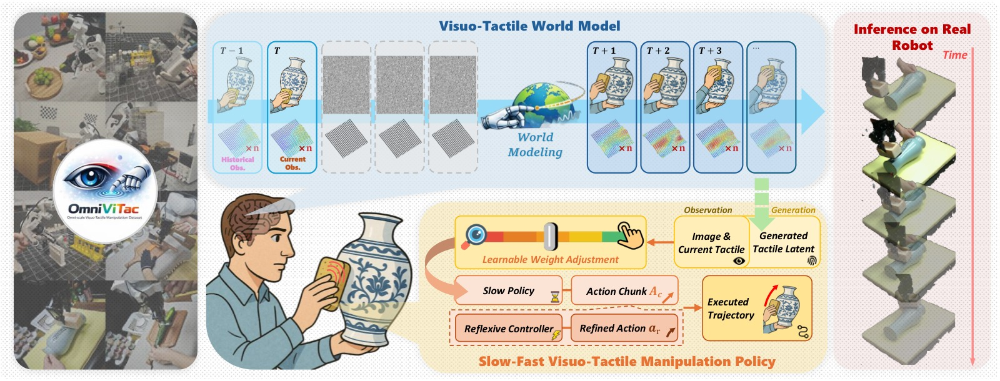
图1：OmniVTA 总览。(左) OmniViTac 数据集——21,000+ 条 visuotactile-action 对齐轨迹，86 个任务，按 6 种物理交互模式组织；(中) OmniVTA 框架——TactileVAE + Visuo-Tactile World Model + Adaptive Fusion Policy + 60Hz Reflexive Controller；(右) 真机实验在所有 6 个类别上超越 baseline。
二、OmniViTac 数据集
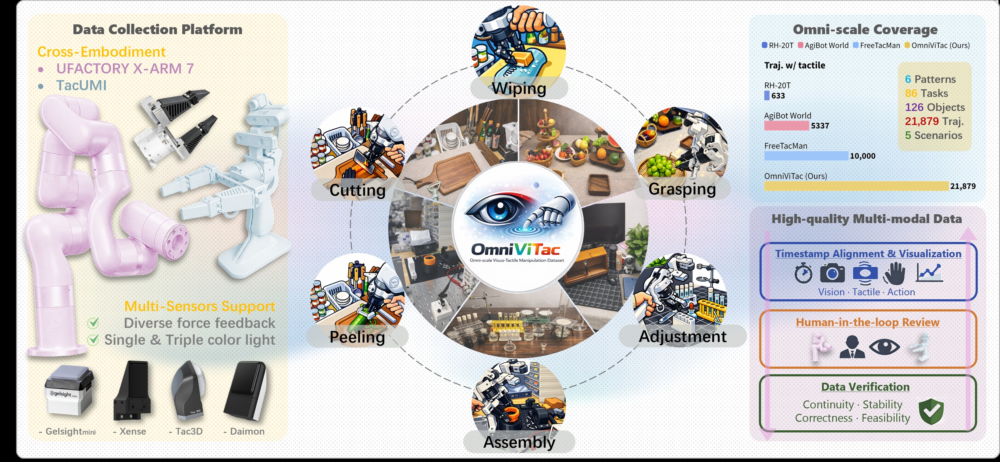
图2：OmniViTac 数据集覆盖 100+ 物体、86 个接触-rich 任务，按 6 种物理交互模式分类——Wipe、Peel、Cut、Assembly、Grasp、Adjustment。每类 5-6 个物体，各 150 条轨迹。
2.1 数据规模
| 维度 | 规模 |
|---|---|
| 总轨迹数 | 21,000+ |
| 任务数 | 86 |
| 物体数 | 100+ |
| 交互模式 | 6（Wipe / Peel / Cut / Assembly / Grasp / Adjustment） |
| 传感器 | TacUMI + xArm7, 15Hz 视觉 + 60Hz 触觉（Xense, 35×20×3 marker displacement） |
2.2 两条结构性质
分析数据集揭示了两条指导 OmniVTA 架构设计的触觉信号性质：
-
空间局部性（Spatial Locality）：触觉信号在接触点周围变化剧烈，远离接触点几乎不变。这启发了 TactileVAE 使用 INR 解码器建模连续形变场。
-
接触驱动动力学（Contact-Driven Dynamics）：触觉信号主要在接触状态变化时活跃，非接触阶段几乎静止。这启发了 Dynamic-Aware Loss 强调高频接触变化区域。
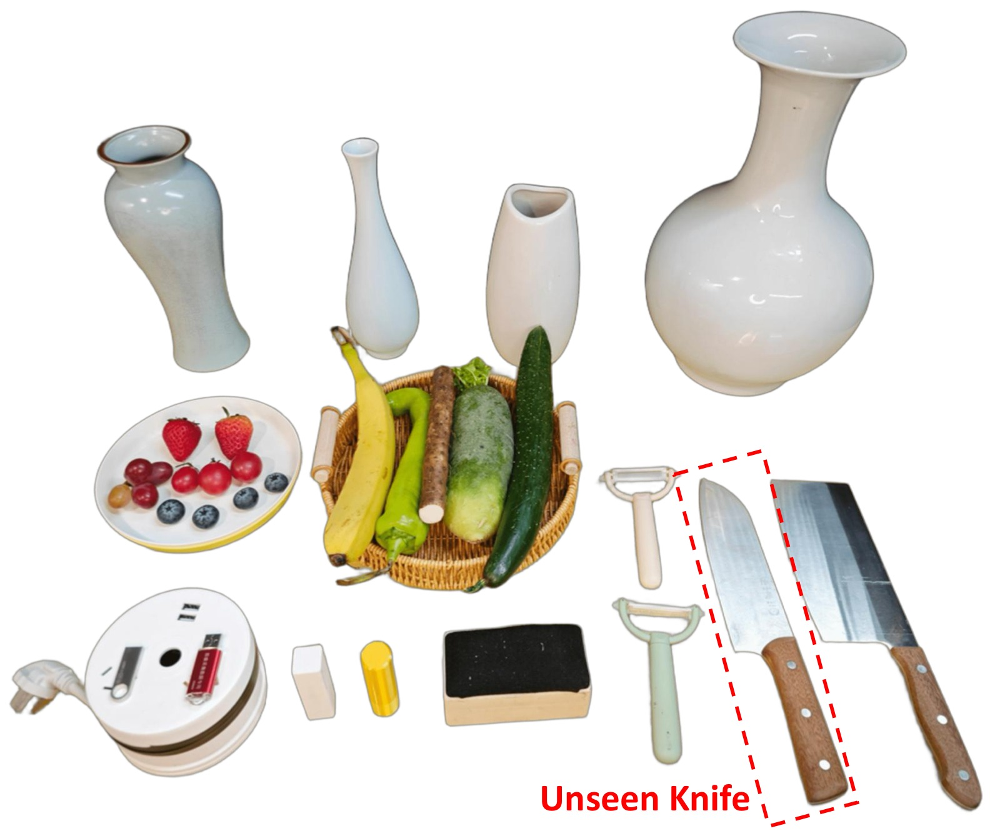
图3：六类操作任务中使用的训练和评估物体。每类包含 4-5 种物体用于训练，2-4 种用于操纵评估。
三、OmniVTA 方法
3.1 系统架构：Slow-Fast 分层策略
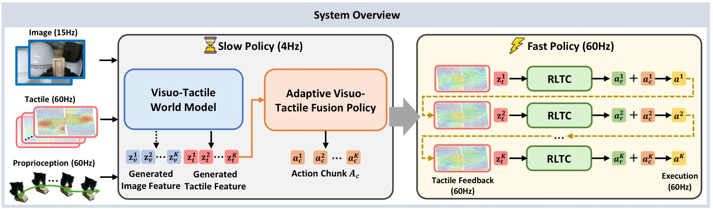
图4：OmniVTA 的分层 slow-fast 架构。Slow Policy 包含 TactileVAE + Visuo-Tactile World Model + Adaptive Fusion Policy；Fast Policy 为 60Hz Reflexive Latent Tactile Controller。最终动作为两者的加权求和。
OmniVTA 将操作显式分解为 Slow Planning（15Hz）和 Fast Reflexive Control（60Hz）：
┌─────────────────────────────────────────────────────────────────┐
│ OmniVTA Pipeline │
├─────────────────────────────────────────────────────────────────┤
│ │
│ ┌─────────────────── SLOW POLICY (15Hz) ───────────────────┐ │
│ │ │ │
│ │ Vision (RGB, 15Hz) ──► SD-VAE ──► z_v │ │
│ │ Tactile (60Hz) ──► TactileVAE ──► z_t (sparse) │ │
│ │ │ │
│ │ ┌─────────────────────────────────────────────────────┐ │ │
│ │ │ Visuo-Tactile World Model (VTWM) │ │ │
│ │ │ ┌──────────────┐ ┌──────────────┐ │ │ │
│ │ │ │ Visual Stream│ │ Tactile Stream│ │ │ │
│ │ │ │ (DiT) │ │ (DiT) │ │ │ │
│ │ │ │ predict z_v │ │ predict z_t │ │ │ │
│ │ │ └──────┬───────┘ └──────┬────────┘ │ │ │
│ │ │ └──────────────────┘ │ │ │
│ │ │ Shared Multimodal Conditioner │ │ │
│ │ │ (vision + tactile + action 2D projection) │ │ │
│ │ └─────────────────────────────────────────────────────┘ │ │
│ │ │ │ │
│ │ ▼ │ │
│ │ ┌─────────────────────────────────────────────────────┐ │ │
│ │ │ Adaptive Visuo-Tactile Fusion Policy (AFP) │ │ │
│ │ │ ┌──────────────────┐ ┌──────────────────┐ │ │ │
│ │ │ │ LTD Encoder │ │ Gating Mechanism │ │ │ │
│ │ │ │ (observed-pred │──►│ adaptive balance │ │ │ │
│ │ │ │ tactile diff) │ │ visual ↔ tactile │ │ │ │
│ │ │ └──────────────────┘ └──────────────────┘ │ │ │
│ │ └─────────────────────────────────────────────────────┘ │ │
│ │ │ │ │
│ │ ▼ │ │
│ │ Action Chunk (6 steps @ 15Hz) │ │
│ └───────────────────────────────────────────────────────────┘ │
│ │ │
│ ┌─────────── FAST POLICY (60Hz) ───────────────────────────┐ │
│ │ Reflexive Latent Tactile Controller (RLTC) │ │
│ │ Δa = MLP( predicted_tac_latent - observed_tac_latent ) │ │
│ │ → corrective delta actions @ 60Hz │ │
│ └───────────────────────────────────────────────────────────┘ │
│ │ │
│ a_final = a_slow + α × Δa_fast │
└─────────────────────────────────────────────────────────────────┘
3.2 TactileVAE：隐式神经表示触觉编码器
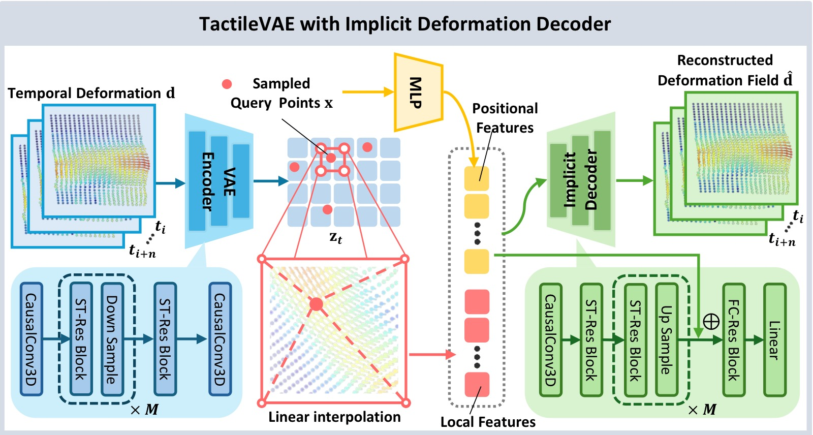
图5：TactileVAE 架构。编码器：因果 3D 卷积（project-in + M 个下采样模块 + project-out）；解码器：INR MLP，将空间坐标 + 局部潜特征映射为连续 3D 形变向量。
动机：替代高分辨率触觉图像，使用 3D marker displacement（如 Xense: 35×20×3）作为输入——捕捉接触形变同时保持低分辨率。120 万触觉样本预训练（来自 20% 操作轨迹 + 额外 10 个物体的交互数据）。
编码器：因果 3D 卷积 VAE
- Project-in → M 个下采样模块 → Project-out（均为 causal 3D conv）
- 因果约束：时刻 t 的特征仅依赖当前及过去观测，确保训练-推理一致性
- 输出：$\frac{H}{s} \times \frac{W}{s} \times C$ 的潜特征图（$s = 2^M$ 为空间下采样因子）
解码器：INR（隐式神经表示）
- $\mathbf{x} \in \mathbb{R}^2$：空间坐标
- $\mathbf{z}_t$：潜特征图
- $\gamma(\cdot)$：位置编码
- $\Phi(\mathbf{z}_t, \mathbf{x})$：空间插值提取局部特征
- $\mathcal{D}_{\theta}$：MLP 解码器，预测 3D 形变 $\mathbf{d}(\mathbf{x}) \in \mathbb{R}^3$
训练损失：
关键消融发现（从 t-SNE 可视化）：
- 去掉 INR 解码器 → 跨传感器和力模式的聚类消失
- 去掉位置编码 → 聚类退化
- 隐式解码器 + 位置编码 = 跨传感器（GelSight Mini/Tac3D/Xense）和力模式（press/twist/slide）的清晰聚类
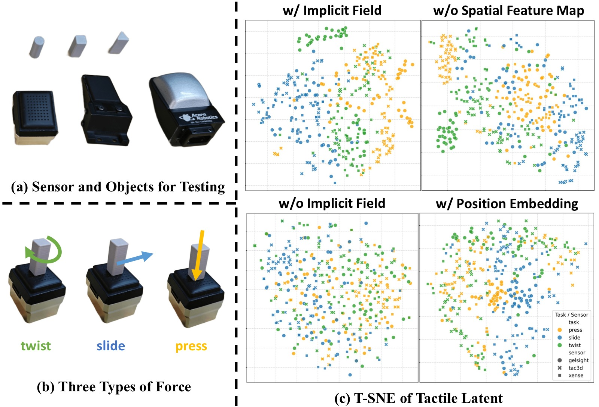
图6：TactileVAE 消融。(a) 测试传感器和物体；(b) 三种力加载模式；(c) t-SNE 可视化——完整模型在跨传感器设置下产生按力模式清晰聚类的特征，而去掉位置编码或 INR 解码器的变体无法产生良好分离的聚类。
3.3 Visuo-Tactile World Model (VTWM)
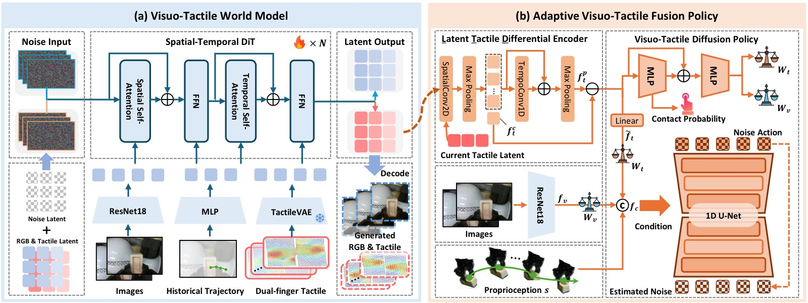
图7：(a) VTWM 双流架构——视觉和触觉分支使用独立的时空 DiT，共享条件编码器对齐；(b) Adaptive Fusion Policy——LTD Encoder 编码观察-预测触觉差分，Gating 机制自适应平衡模态。
Two-Stream World Model：
- 视觉流：SD-VAE 压缩图像 → $z_v$，送入时空 DiT
- 触觉流：TactileVAE 压缩形变 → $z_t $，送入独立的时空 DiT
- 两流并行去噪，共享条件向量（来自 Multimodal Conditioner）
扩散目标：
其中 mask $m$ 提供时序条件（历史帧 clean → 预测帧 pure noise）。
Multimodal Observation Conditioner：
- 分别对视觉、触觉、动作进行特征提取和时序聚合
- 动作表示为末端执行器 3D 位姿在 2D 图像平面的投影 → 提升位置变化鲁棒性
- 三模态融合为共享线性投影空间 → 统一条件向量注入两流
Dynamic-Aware Weighted Loss：
- 动态权重图基于局部时序差分 → 强调快速变化区域
- 幅值权重图基于触觉响应幅值 → 强调强接触区域
- 两项 loss 权重均设为 1.0
推理优化：不生成视觉观测——世界模型仅预测未来触觉信号，实现更高频率 rollout。
3.4 Adaptive Visuo-Tactile Fusion Policy (AFP)
LTD (Latent Tactile Differential) Encoder：
- 编码"当前观察到触觉 - 世界模型预测触觉"的差分信号
- 相比于直接拼接原始触觉值，差分表示让策略感知接触状态变化而非绝对值
- 消融验证：LTD Encoder 显著优于简单拼接
Gating Mechanism：
- 门控权重 $\mathbf{g}$ 由当前视觉和触觉特征联合预测
- 接触阶段触觉权重高，非接触阶段视觉权重高
- 消融验证：自适应门控优于固定融合权重
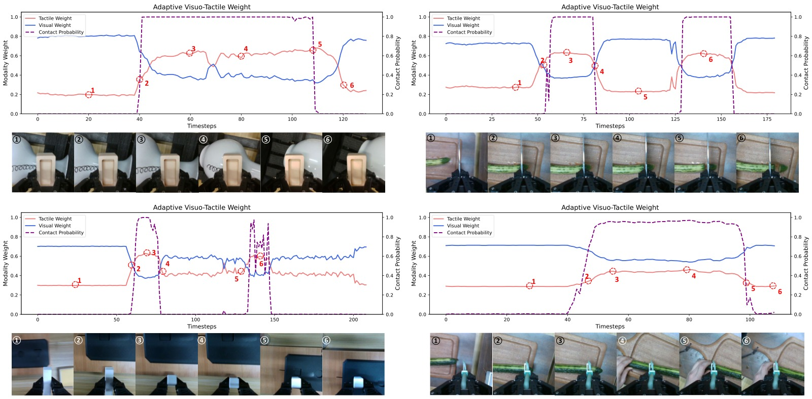
图8：门控权重的时序演化。接触阶段触觉权重上升，非接触阶段视觉权重主导。门控权重与接触状态高度相关。
3.5 Reflexive Latent Tactile Controller (RLTC)
核心思想：将世界模型预测的触觉信号作为"期望接触状态"，实际触觉作为反馈，在 latent space 中计算偏差并生成 60Hz 修正动作。
关键效果：
- OmniVTA 平均切向形变 0.35（最大 0.72）——维持可靠接触
- RDP 平均切向形变 0.56（最大 1.1）——产生过大接触力，损坏传感器
- RLTC 在扰动实验中贡献约 20pp 成功率提升
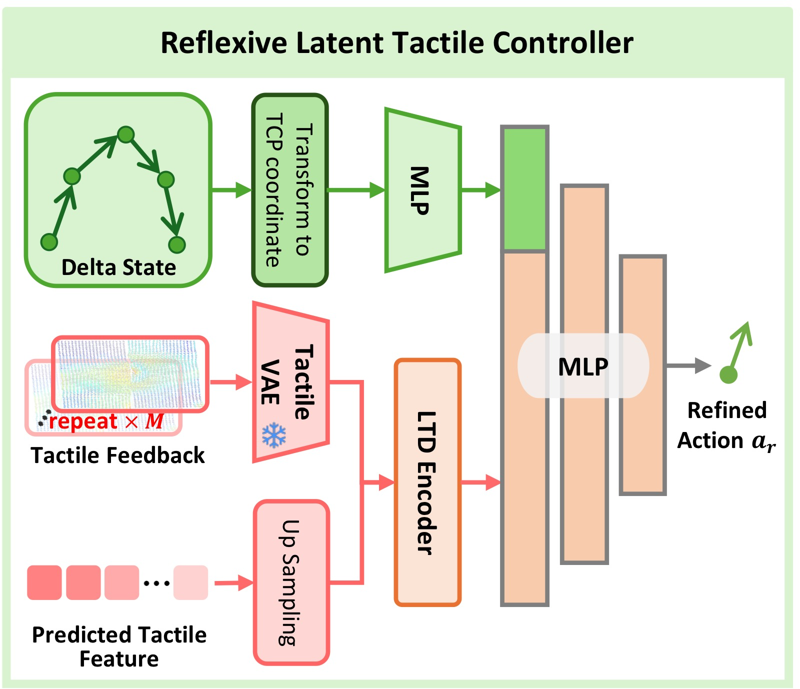
图9：RLTC 在扰动下的恢复行为。当物体被突然下移破坏接触时，RLTC 在一个生成块内恢复接触状态。红线=预测，蓝线=真值。
四、实验与结果
4.1 真机操作性能
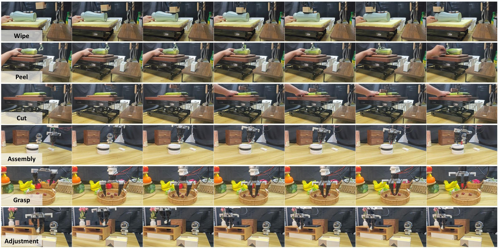
图10：六类任务的真机 rollout 可视化。每类展示三个关键帧——初始、交互、完成。
完整实验结果表（O=物体多样性, G=泛化, P=扰动鲁棒性，成功率 %）：
| 方法 | Wipe(O/G/P) | Peel(O/G/P) | Cut(O/G/P) | Assembly(O/G/P) | Grasp(O) | Adjust(O/G) |
|---|---|---|---|---|---|---|
| DP | 12/5/0 | 6/0/0 | 28/10/0 | 10/0/5 | 20 | 0/0 |
| DP+tactile | 36/28/0 | 32/20/8 | 33/15/13 | 30/10/10 | 48 | 25/15 |
| KineDex | 40/25/0 | 24/13/5 | 38/30/20 | 30/15/15 | 65 | 30/20 |
| ForceMimic | 33/20/0 | 27/18/0 | 50/25/5 | 35/15/10 | 60 | 10/0 |
| RDP | 50/38/42 | 48/36/45 | 65/50/43 | 60/50/35 | 88 | 50/50 |
| OmniVTA w/o RLTC | 66/40/25 | 40/30/20 | 50/50/20 | 40/35/20 | 70 | 40/30 |
| OmniVTA | 80/58/60 | 55/48/63 | 85/83/60 | 60/50/40 | 90 | 65/65 |
3 种评估 × 6 个任务 = 15 个指标，OmniVTA 在 13 个上排第一。Assembly 的物体多样性上 RDP 持平（60 vs 60）。
4.2 世界模型预测
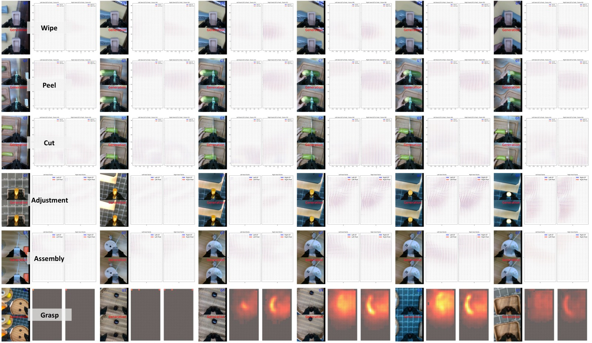
图11：VTWM 在六类任务上的预测可视化。红色箭头=预测切向形变，蓝色=真值。模型准确预测接触区域的方向和幅值。
| 对比维度 | 结果 |
|---|---|
| vs exUMI / UVA / ForceMimic | 在所有预测 horizon（8/16/24 帧）上超越 baseline |
| 联合生成视觉特征 | 提升触觉预测精度——视觉提供互补全局动力学线索 |
| 2D vs 3D vs Relative Action | 2D 动作表示（末端图像平面投影）泛化性最优 |
| Dynamic-Aware Loss | 对高频触觉变化预测精度有明显增益 |
4.3 TactileVAE 重建质量
| 方法 | L2 ↓ (全部形变场) | Cos ↑ (非零形变区域) |
|---|---|---|
| PCA | 基线 | 基线 |
| Point Cloud AE | 中等 | 中等 |
| TactileVAE (ours) | 最优 | 最优 |
跨 6 种交互模式均一致最优。INR 解码器对跨传感器泛化至关重要。
4.4 组件消融
| 消融 | 关键发现 |
|---|---|
| 预测触觉 vs 仅当前触觉 | 预测未来触觉显著提升策略性能 |
| LTD Encoder vs 简单拼接 | LTD 编码差分信号 > 直接拼接原始触觉 |
| Gating vs 固定权重 | 自适应门控 > 固定融合权重 |
| RLTC vs w/o RLTC | 60Hz 反射控制器在所有扰动任务上约 +20pp |
| 2D Action vs 3D Absolute vs 3D Relative | 2D 动作表示泛化性最优 |
4.5 扰动恢复
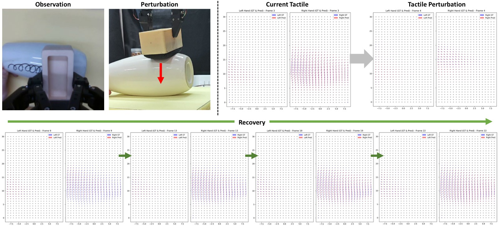
图12：接触扰动与恢复。第一行：物体被下推，触觉信号转为无接触状态。第二行：在一个生成块内恢复到接触状态。
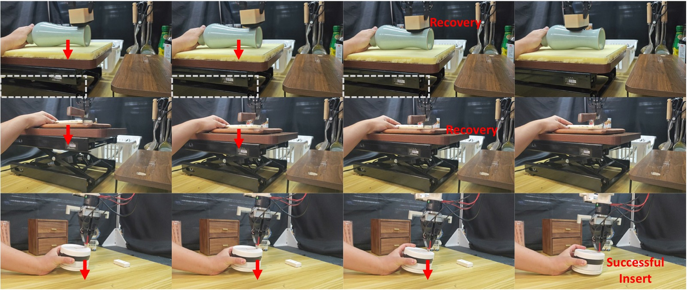
图13：多步扰动下的触觉预测与恢复。模型展现出一定程度的扰动恢复能力。
五、关键洞察与技术亮点
-
触觉信号的物理性质驱动架构设计：空间局部性 → INR 解码器；接触驱动动力学 → Dynamic-Aware Loss。这不是凭空设计的 trick，而是从数据分析中推导出的架构选择。
-
世界模型在推理时不生成视觉：仅预测未来触觉信号供策略和控制器使用——这是被低估的效率优化。视觉生成是最耗时的部分，跳过它使世界模型可以 support 更高频率的推理。
-
预测触觉作为"期望接触状态"：RLTC 将世界模型预测的触觉作为控制目标——这是一种创新的 reflexive control 范式：不需要手工设计期望接触力轨迹，世界模型自动从数据中学习。
-
LTD Encoder 的差分设计：编码"观察-预测"的触觉差异而非绝对值——策略不需要知道绝对接触力是多少，只需要知道偏离了多少。
-
2D 动作表示优于 3D：将末端执行器位置投影到图像平面作为动作条件——与视觉观测天然对齐，提供位置变化的 invariance。
-
OmniViTac 是当前最大的 visuotactile 数据集：21k+ 轨迹 × 6 类交互模式 = 未来工作的坚实基础。
六、代码实现解读
训练管线
| 阶段 | 组件 | 数据 | 配置 |
|---|---|---|---|
| 1 | TactileVAE | 120 万触觉样本 (20% trj + 10 extra objects) | 8×A100, 50 epochs, λ_KL=1e-6 |
| 2 | VT World Model | 每类 5-6 物体, 各 150 轨迹, 90/10 split | AdamW lr=1e-4, 100k steps, grad clip 0.1 |
| 3 | Fusion Policy | 同上 + combined across categories | 250k steps, λ_ct=0.2 |
| 4 | RLTC | 同上 | 独立训练 |
推理流程
t ─► TactileVAE(obs_tac) → z_t
│ SD-VAE(obs_vis) → z_v
│
├─► VTWM(z_v, z_t, action_2D) → predicted_z_t (future)
│
├─► LTD_Encoder(observed_z_t - predicted_z_t) → tactile_diff_features
│
├─► Gating(visual_features, tactile_diff_features) → fused_features
│
├─► Diffusion Policy Head → a_slow (6-step chunk @ 15Hz)
│
└─► RLTC(predicted_z_t - observed_z_t) → Δa (60Hz correction)
a_final = a_slow + α × Δa
关键参数
| 参数 | 值 |
|---|---|
| 视觉频率 | 15Hz (当前帧 + 前 1 帧, 共 2 帧) |
| 触觉频率 | 60Hz (8 帧/时间窗口, 对齐到视觉窗口) |
| 动作输出 | 15FPS chunk（预测 6 步, 插值到 60Hz） |
| Xense 触觉分辨率 | 35×20×3 marker displacement |
| 世界模型预测 horizon | 24 触觉帧 (对应 6 个 latent frames) |
七、局限性
- 仅限单臂平行夹爪——未涉及双臂或灵巧手设置
- 世界模型规模和数据多样性有限——更大规模预训练的效果未知
- 跨具身迁移：触觉表示和世界模型能否迁移到不同机器人形态尚未验证
- 触觉评估基于 Xense，不同触觉传感器的泛化性待验证
八、关键概念速查
| 概念 | 解释 |
|---|---|
| TactileVAE | 因果 3D 卷积编码器 + INR 解码器的触觉 VAE，建模连续形变场 |
| VTWM | Visuo-Tactile World Model，双流 DiT 并行预测视觉+触觉未来 |
| Dynamic-Aware Loss | 基于触觉时序差分+响应幅值的加权扩散 loss |
| LTD Encoder | 编码观察-预测触觉差分，让策略感知接触状态变化 |
| Gating | 自适应平衡视觉/触觉特征权重的门控融合 |
| RLTC | Reflexive Latent Tactile Controller，60Hz 残差修正 |
| INR | Implicit Neural Representation，建模连续形变场的解码器 |
| OmniViTac | 21,000+ 轨迹的 visuotactile-action 对齐大规模数据集 |